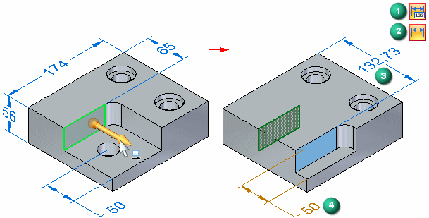

Examining dimension changes during a synchronous edit
While in Solution Manager mode, you can examine the dimension values that are affected by the synchronous edit.
-
Unaffected dimensions are automatically hidden, as shown on the right portion of the image below.
-
Changed dimensions (3) automatically display if hidden, and a changed dimension indicator symbol (1) displays in the top-right corner of the graphics window.
-
Detached dimensions (4) automatically display if hidden, and a detached dimension indicator symbol (2) displays in the top-right corner of the graphics window.

You can use view commands such as Fit, Rotate, and Zoom to better observe the faces and dimensions on the model which are changing.
You can click the indicator symbols (1, 2) to display total count values for changed and detached dimensions in the PromptBar. You can also pause the cursor over individual changed or detached dimensions to display their previous value in the PromptBar.
In the following demonstration, a face is rotated and an edge of the face has a driven angular dimension. A model change indicator displays showing that a dimension is changing. A face is then rotated and as the face moves it consumes a face that has a dimensioned edge. A model change indicator appears showing that a dimension is detached.